Hockey
 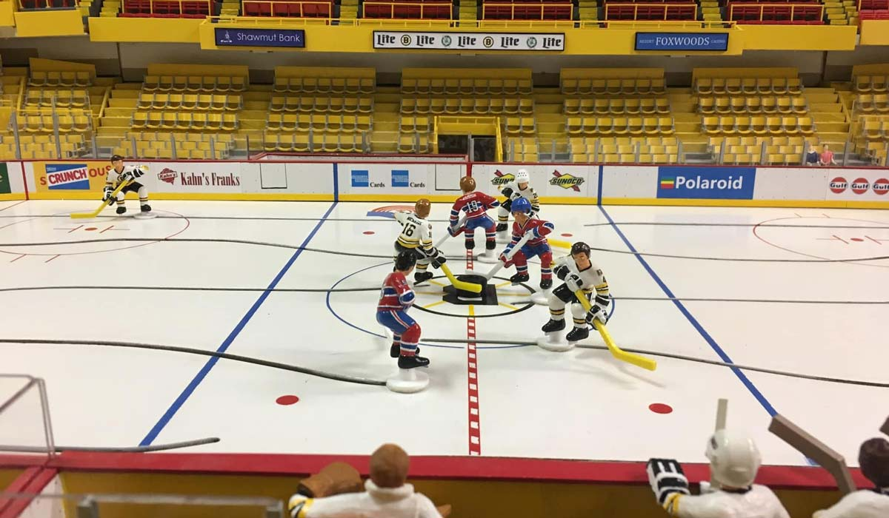
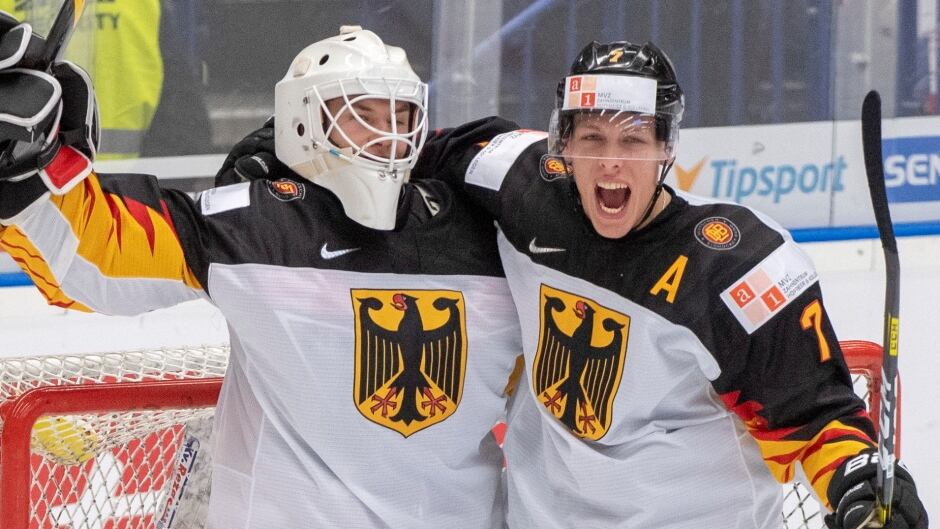
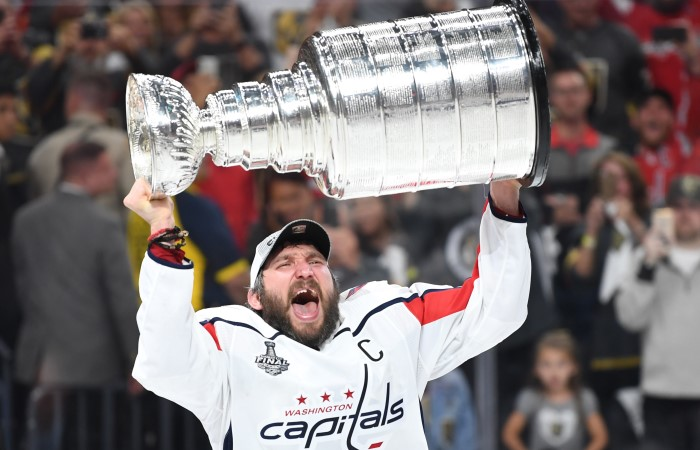
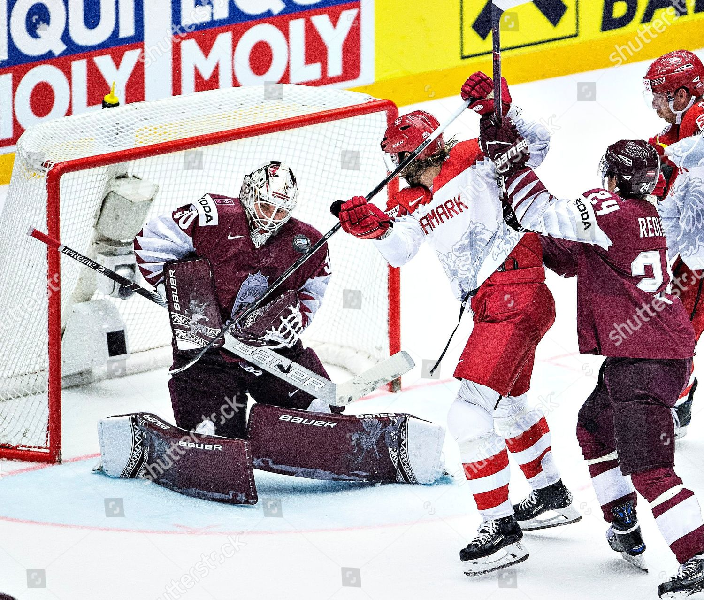
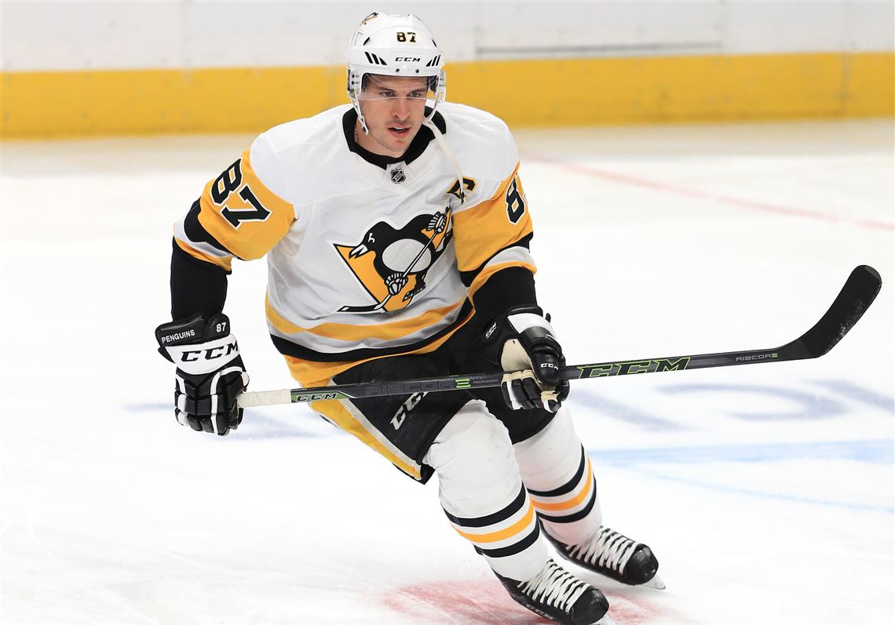
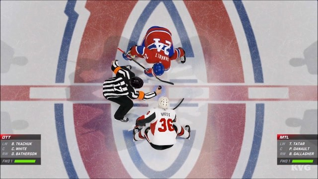
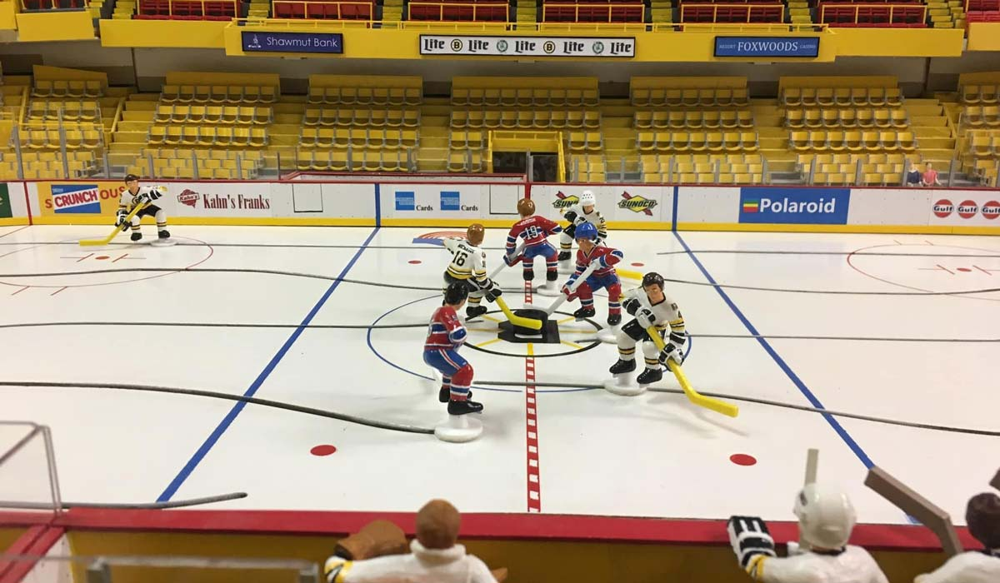
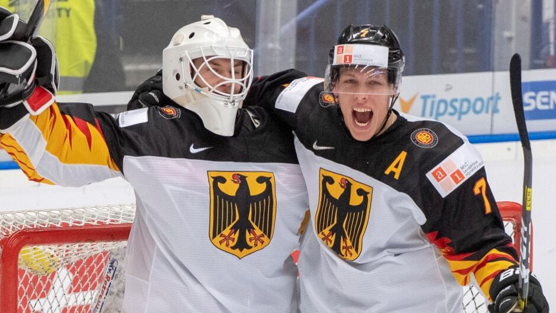
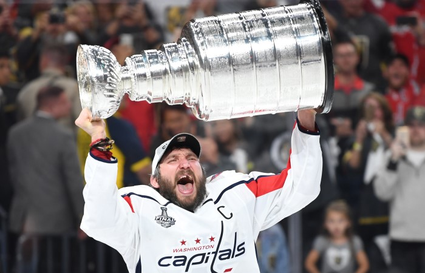
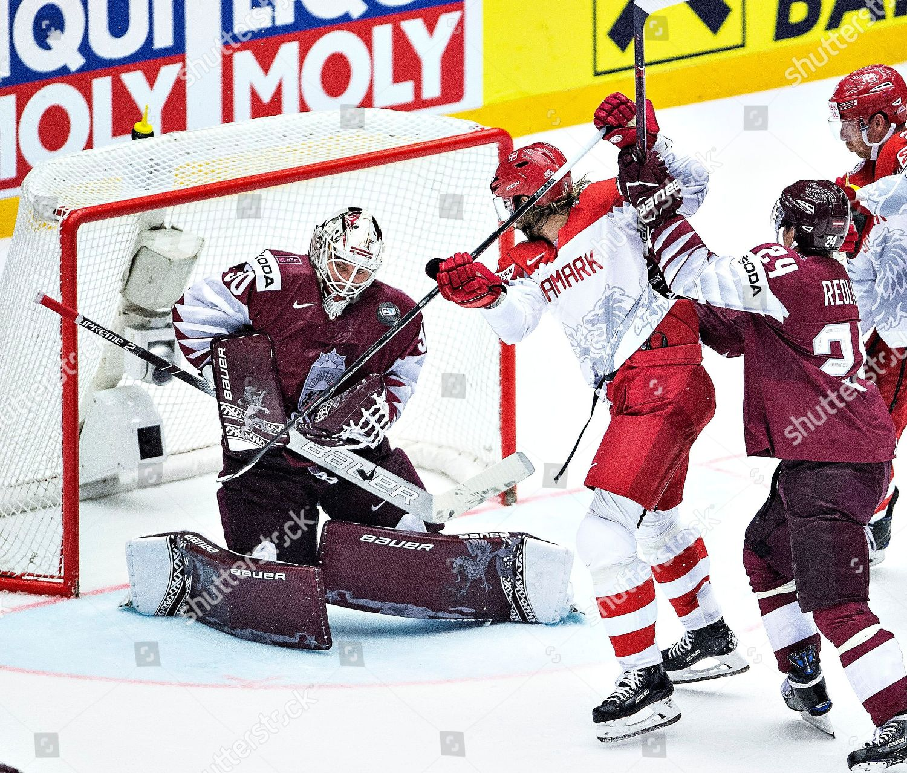
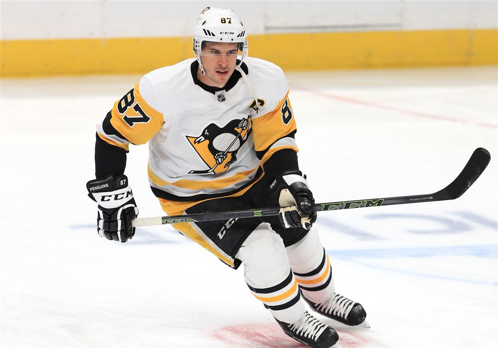
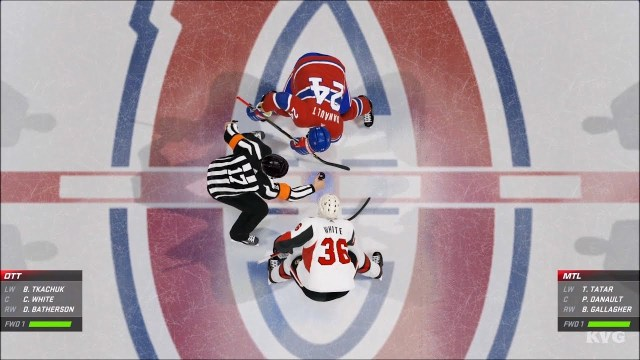
Hockey's main trophies
Stenly Cup

Stanley Cup is a hockey prize awarded annually to the winner of the playoffs of the National Hockey League. The cup was originally called the Dominion Hockey Challenge Cup. The goblet is a silver vase almost 90 cm high with a massive cylindrical base.
Stanley Cup today
Players receive a copy made by jeweler Carl Peterson in 1964.
Modern Stanley Cup with a replica of the original cup on top, made of silver and nickel alloy. Its height is 89.54 centimeters and its weight is 15.5 kilograms.
Since the expansion of the NHL in the 1970s, the Stanley Cup is played by the top 16 teams in the NHL regular season in a series of up to four wins. However, the top 16 teams do not necessarily make the top 16 teams.
Until 1993, the NHL was divided into 4 divisions of 5-6 clubs each. Four clubs advanced from each division to the playoffs. The teams first determined the division champion, then the conferences, and only after that the Stanley Cup was played.
Since the mid-1990s, after the expansion of the League, the clubs have been divided into 6 divisions and two conferences, and eight clubs from each conference advance to the playoffs, with the winners of the divisions going to the playoffs in any scenario and are "seeded" in the top three regardless from the points scored.
Since the 2012/2013 season, the league has again reduced the number of divisions to four, two divisions in the Western Conference (8 teams in the Pacific division, 7 in the central division), and two in the East with 8 teams each. The top three teams from each division advance to the playoffs, plus two more from each conference get points.
Gagarin Cup
The Gagarin Cup is a hockey prize awarded to the winner of the Kontinental Hockey League playoff series since the 2008/2009 season.
The cup is named after the first cosmonaut Yuri Gagarin and is a challenge cup. At the closing ceremony of the championship, the trophy is given to the captain of the winning team.
According to the head of the league, Alexander Medvedev, the name of Gagarin was chosen for the reason that his name is associated with the highest achievements among the residents of Russia, and Yuri Gagarin himself is a symbol of the nation. In addition, according to the creators of the KHL, the breakthrough made by Gagarin in space should be associated with a breakthrough in hockey. Also, the final matches are held in early April, including April 12 - Cosmonautics Day. Among the options for the name of the cup also appeared the name of Anatoly Tarasov, but it was decided to name one of the league divisions in his honor.
The cup was presented to the general public during the first All-Star Game in the history of the KHL. The presentation was attended by the captains of the playing teams - Alexei Yashin and Jaromir Jagr.
The Gagarin Cup is played by the 16 best teams of the KHL regular season in a series of up to four wins. However, the top 16 teams do not necessarily include the top 16 teams. Eight clubs from each conference advance to the playoffs, with the winners of the divisions going to the playoffs in any scenario and "seeded" in the top pair regardless of the points scored.
Each player of the team that holds the cup receives a champion's ring.
On April 12, 2009, the Ak Bars team from Kazan became the first winner of the Gagarin Cup and the KHL champion in the 2008/2009 season.
Hockey in games
 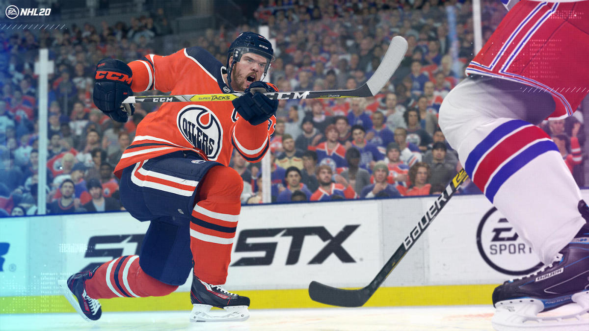
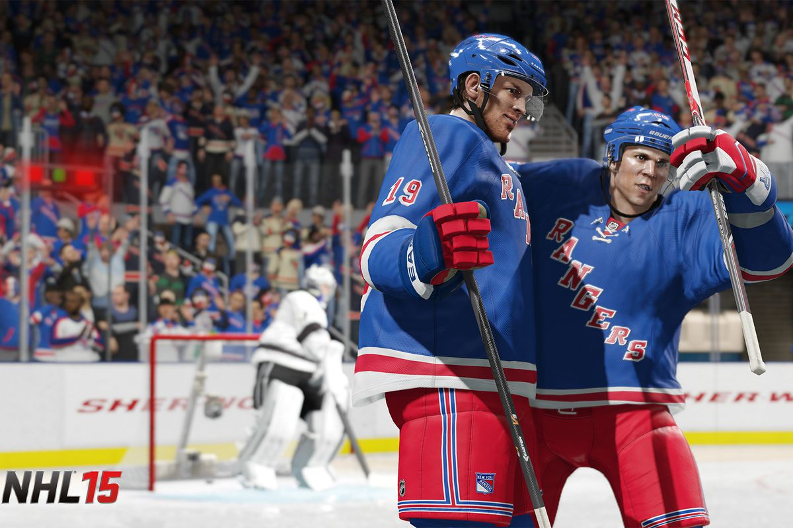
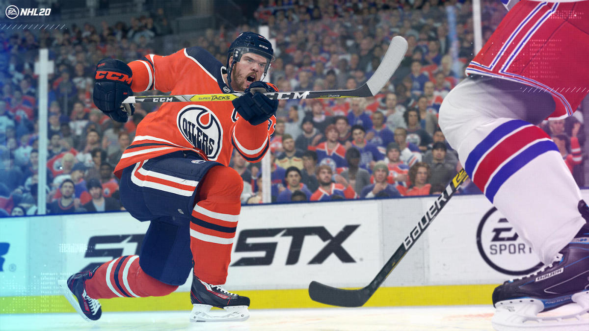
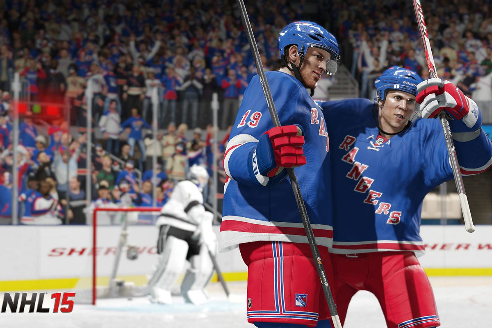